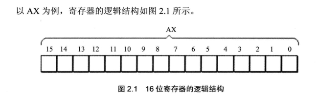
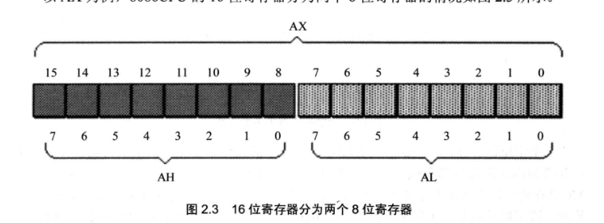
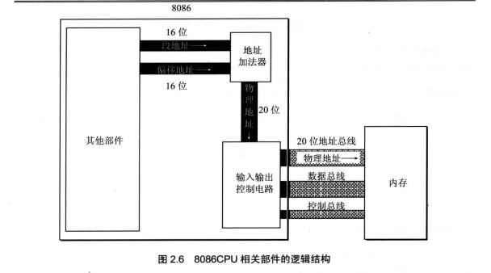
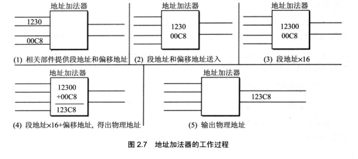
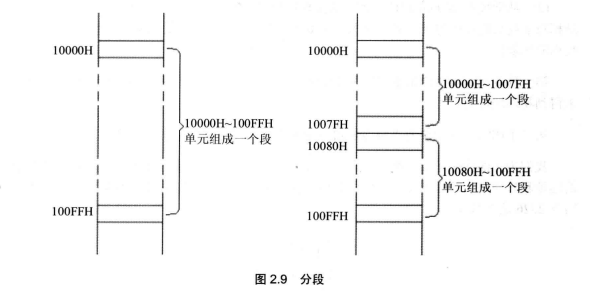

程序员通过改变各种寄存器中的内容来实现对CPU的控制！！
1.通用寄存器
在8086cpu中所有寄存器都是16位的，其中AX,BX,CX,DX用来存放一般性数据，被称为通用寄存器，其结构如下：

但是为了兼容上一代的程序，又可以将AX分为AH,AL：

我们可以根据我们的用途来对它们进行灵活使用来达到存储数据的目的。
8086CPU中的AX,BX,CX,DX这四个寄存器都可分为两个独立使用的8位寄存器来用：
AX可分为AH，AL；
BX可分为BH，BL；
CX可分为CH，CL；
DX可分为DH，DL；
注意，寄存器中没有符号位之说，所以16位寄存器能存储的最大数值为：2^16-1 ，8位寄存器能存储的最大数为：2^8-1
2.字在寄存器中的存储
我们知道，出于对兼容性的考虑，8086CPU可以一次性处理以下两种尺寸的数据：
1）字节（byte）：一个字节由8个bit组成，它可以存放在一个8位寄存器中。
2）字（word）：一个字由两个字节组成，这两个字节分别称为这个字的高位字节和低位字节。
汇编中关于数制的讨论：
任何数据，到了计算机中都是以二进制的形式存放的。为了描述不同的问题，又经常将他们用其他的进制（16进制，10进制）来表示。
当然，二进制数本身也是表示一个数值的大小，但我们习惯用十进制，所以做这个数制的转换更方便理解其逻辑含义。
由于一个内存单元可存放8位数据，CPU中的寄存器又可以存放n个8位数据，也就是说，计算机中的数据大多是由1–N个8位数据构成的。
很多时候，需要直观的看出组成数据的各个字节数据的值，用十六进制来表示数据可以直观的看出这个数据是由哪些8位数据构成的。比如2000
写成4E20就可以直观的看出，这个数据由4E和20两个8位数据构成的，如果AX中存放4E20那么，AH中存放的就是4E，AL中存放的就是20.
在后面的学习中，为了区分不同的进制，在十六进制表示的数据的后面加H，在二进制表示的数据后加B,十进制后面什么也不加。
3.几条汇编指令
| 汇编指令 | 控制CPU完成的操作 | 用高级语言的语法描述 |
|---|---|---|
| mov ax,18 | 将18送入寄存器AX | AX=18 |
| mov ah,78 | 将78送入寄存器AH | AH=78 |
| add ax,8 | 将寄存器AX中数值上加8 | AX=AX+8 |
| mov ax,bx | 将BX中的数值送入AX中 | AX=BX |
| add ax,bx | 将AX,BX数值相加，结果存在AX中 | AX=AX+BX |
从上面的表格我们可以总结出：mov是赋值关键字 add是增操作关键字。
注意：在进行数据传送或运算时，一定要保证两个操作对象的位数要一致！！！ 否则会出错。
4.物理地址
我们知道，CPU访问内存时，要给出内存单元的地址。所有的内存单元构成的存储空间是一个唯一的线性空间，
每一个内存单元在这个空间中都有唯一的地址，我们将这个唯一的地址称为物理地址。
CPU通过地址总线送入存储器的必须是一个内存单元的物理地址，在CPU向地址总线上发出物理地址之前，必须要在内部线形成这个物理地址，不同的CPU可以有不同的形成物理地址的方式。
5.16位结构的CPU
概况的说，16位结构描述了一个CPU具有下面几方面的结构特性：
1）运算器一次最多可以处理16位的数据
2）寄存器的最大宽度为16位
3）寄存器和运算器之间的通路为16位。
6.8086CPU给出物理地址的方法
8086CPU有20位地址总线，它可以传送20位地址，达到1MB的寻址能力。
它又是16位的结构，在内部可以一次性处理，传输，暂时存储的地址为16位。从其内部结构来看，它的寻址能力只有64kb。
8086CPU采用一种在内部用两个16位地址合成的方法来形成一个20位的物理地址。
其相关部件的逻辑结构如下图：

如上图所示，当8086CPU要读写内存时：
1）CPU中的相关部件提供两个16位的地址，一个称为段地址，一个称为偏移地址。
2）段地址和偏移地址通过内部总线送入一个称为地址加法器的部件中。
3）地址加法器将两个16位地址合成为一个20位的物理地址。
4）地址加法器通过内部总线将20位物理地址送入输入输出控制电路。
5)输入输出控制电路将20位物理地址送上地址总线。
6）20位物理地址被地址总线传送到存储器中。
其中物理地址的算法为：段地址x16+偏移地址
实例如下：

7.段地址x16+偏移地址=物理地址 的本质含义
此算法诞生于CPU本身内部 寄存器宽度的局限性。
段地址x16+偏移地址=物理地址 的本质含义是：CPU在访问内存时，用一个基础地址（段地址x16）和一个相对与基础地址的偏移地址相加，给出内存单元的物理地址。
这样所无非是想让总线宽度的得到充分利用。增加CPU控制内存的能力。
8.段的概念
其实内存并没有分段，段是一种相对的概念，我们可以使用任何一个内存地址作为段地址，而不是每个段都是固定的，相反，段是由我们自己定义的。

如上图，我们既可以将10000H~100FFH分为一段，也可以将其分为两段。